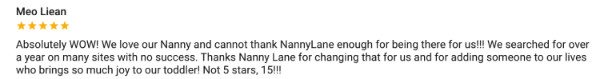
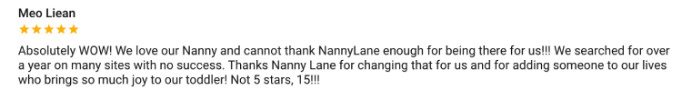

I’m a product leader with 5+ years of experience
building customer-focused products, growing high-performing teams, and driving impact at scale.
Looking for full-time product roles
starting in Sept/Oct.
Flexible for the right role.


Some of my proudest accomplishments
👊 Advising startups tackling gender inequities including ONYX and TruthTara
🎓 Pursuing a Masters of Science in Medical Anthropology at the University of Oxford focused on women's healh inequities
💸 Multiplying our monthly revenue by 85x ($2k to $175k) and growing from a cross-functional team from 2 to 12
❤️  Designing and managing Canada’s leading Product Management training program for 60 students, 30 mentors, and 8 directors to make tech more inclusive
🧠 As a marketing coordinator, teaching myself HTML, CSS, and SQL
🌎 Becoming a digital nomad and living in countries like Morocco, Namibia, South Africa, Spain, the Netherlands, and others
A few words from past coworkers

“I’m so impressed at everything you’ve accomplished, the culture you’ve fostered, and how much you’ve grown over the last few years. You’ve proven that you can accomplish anything you set your mind to.”
- COO of CareGuide
“I’m incredibly lucky to be on this team and working with you this year has been a wonderful experience. You’re a great leader and an invaluable asset to any team that you choose to join in the future. You’re a true rockstar.”
- Engineer on Nanny Lane
“Watching her grow from Product Manager to Director of Nanny Lane was inspiring and well deserved. As my manager, I am eternally grateful for the impact Shannon has left on my career. She’s intentional in her efforts to support her team grow and reach their highest potential.”
- Designer on Nanny Lane

The things I love doing the most

Taking action in uncertainty by learning quickly, adapting to new information, and knowing when calculated risks to move forward
Adapting to new information whether it’s feedback from the team or our customers
Breaking down complex challenges by turning strategic goals into bite-sized projects to test hypotheses
Uncovering new insights through A/B testing, user interviews, data analysis, and MVPs to drive product strategy
Cultivating cross-functional teams where everyone takes pride in their craft, embraces beginners mindsets and learns from each other
Wearing multiple hats from strategic planning to designing mocks, coding emails, or SEO research, to support the team and ship great products
Consistently prioritizing to ensure that we’re building the right things at the right time to maximize impact, value, and learnings
Reviews from the last product I built

 
